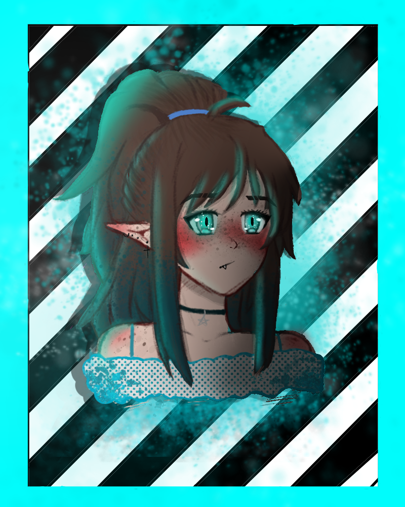
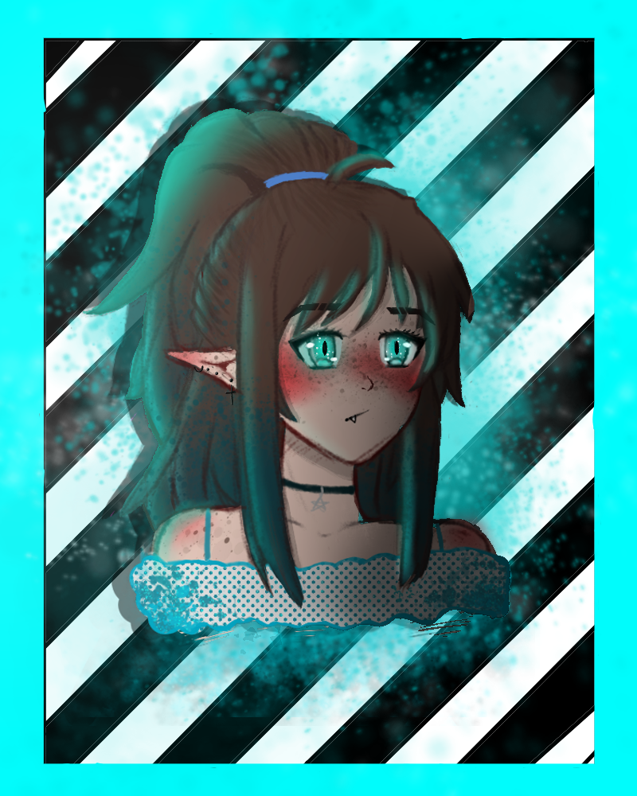

O mnie
Nazywam się alicja i jestem dzieckiem z pasją. to są moje rysunki z przed 4 lat. by dopiedziec sie wiecej o mojej twórczości zapraszam na mojego ig "Kejlajt"! można zaobserwować powoli wzrastający progres.

Nazywam się alicja i jestem dzieckiem z pasją. to są moje rysunki z przed 4 lat. by dopiedziec sie wiecej o mojej twórczości zapraszam na mojego ig "Kejlajt"! można zaobserwować powoli wzrastający progres.
